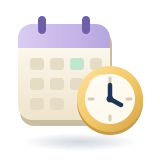

부산 검정고시 과외,
초·중·고졸 1:1 화상수업
부산 거주자를 위한 검정고시 과목별 1:1 화상수업입니다.
방문수업은 진행하지 않습니다.
준비 상황에 따라 수업 방향을 정합니다
상담에서 준비 과정(초졸·중졸·고졸), 과목별 현재 수준, 어려운 과목, 수업 가능한 시간을 먼저 확인합니다.
처음 시작하거나 공부 공백이 긴 경우
필수 과목의 기본 개념부터 다시 정리하고, 과목별로 무리 없는 순서를 정합니다.
특정 과목에서 막히는 경우
어려운 과목을 먼저 확인해 그 과목 위주로 개념 설명과 문제 풀이를 진행합니다.
과목합격 후 남은 과목만 준비하는 경우
이미 합격한 과목과 남은 과목을 확인한 뒤 필요한 과목만 수강 과목으로 정합니다.
실제 수업 시간과 수강 과목은 상담 후 정합니다. 과정별 시험 과목은 검정고시 과목별 수업에서 볼 수 있습니다.

검정고시 온라인과외는 어떻게 진행하나요?
검정고시 온라인과외는 선생님과 학생이 정해진 시간에 만나 공부하는 실시간 1:1 화상수업입니다. 설명을 듣고 직접 문제를 풀면서, 이해하기 어려운 부분은 수업 중에 질문할 수 있습니다.
- 초졸·중졸·고졸 검정고시를 준비하는 학교 밖 청소년, 자퇴 후 준비하는 학생, 성인·직장인이 과목별로 수업합니다.
- 방문수업은 진행하지 않습니다.
- 인터넷 연결과 카메라·마이크를 사용할 수 있는 기기를 준비해 주세요. 기기와 접속 방법은 상담 시 안내합니다.
- 상담 → 무료 체험수업 → 과목·일정 결정 → 1:1 화상수업 순서로 진행합니다.
- 수업 가능한 요일·시간을 알려 주시면 선생님 일정을 확인해 가능한 수업 시간을 안내합니다.
- 수업마다 이해도를 확인해 다음 진도를 조정합니다.
과목·상황별로 이렇게 시작합니다
아래 학습 안내는 지역과 관계없이 모든 검정고시 1:1 화상수업에 같이 적용됩니다. 국어·영어·수학·사회·과학 온라인수업은 과목마다 현재 수준과 막히는 부분을 확인하고, 상담 후 학습 범위와 순서를 정합니다.
검정고시 국어 과외: 지문은 읽었는데 답을 고르기 어렵다면?
어휘·문장 뜻, 문단의 중심 내용, 지문에서 답의 근거 찾기 중 어디가 어려운지 먼저 확인합니다.
- 수업 — 읽은 내용을 문단마다 짧게 정리하고, 선지를 지문과 하나씩 대조하며 고르는 연습을 합니다.
- 복습 — 틀린 선지와 판단의 근거가 된 문장을 다시 확인합니다.
선지와 근거 문장을 대조하는 방법은 국어 지문은 이해하는데 문제를 틀리는 이유에서 볼 수 있습니다.
검정고시 영어 과외: 단어는 외웠는데 문장이 안 읽힌다면?
단어를 몰라서인지, 주어·동사를 못 찾아서인지, 지문에서 답의 근거를 못 찾아서인지부터 나눠 봅니다. 막히는 단계가 다르면 수업과 복습할 내용도 달라집니다.
| 막히는 부분 | 수업에서 확인할 것 | 복습할 내용 |
|---|---|---|
| 단어 뜻 | 문장 속 단어의 뜻을 대부분 아는지 | 자주 나오는 단어를 문장과 함께 다시 보기 |
| 주어·동사 | 짧은 문장에서 주어와 동사를 찾는지 | 수업에서 끊어 읽은 문장을 다시 끊어 읽기 |
| 문장 의미 | 문장 전체를 우리말로 옮길 수 있는지 | 해석한 문장을 보지 않고 다시 옮겨 보기 |
| 짧은 지문 | 질문의 답이 되는 문장을 지문에서 찾는지 | 근거 문장에 표시하며 다시 풀기 |
단계별 예제는 영어 시작점 찾는 법에서 볼 수 있습니다.
검정고시 수학 과외: 기초가 부족하면 무엇부터 확인하나요?
기본 계산 → 분수·부호 → 문자식 → 방정식 순서로 짧은 문제를 풀어 보고, 처음 막히는 단계부터 시작합니다. 학습 순서를 정하기 위한 예시이며, 공식 시험 범위나 진단검사가 아닙니다.
- 개념 이해와 문제 적용 — 계산 규칙을 설명할 수 있는데 문제에서 틀린다면, 같은 개념의 문제를 조건만 바꿔 다시 풀며 적용을 연습합니다.
- 해설로 이해한 문제와 혼자 푸는 문제 — 해설을 보면 이해되는 문제와 해설 없이 다시 풀 수 있는 문제를 나눠 표시하고, 혼자 다시 푼 문제만 해결한 것으로 봅니다.
계산부터 방정식까지 단계별 예제는 수학 시작점 찾는 법에 있습니다.
검정고시 사회 과외: 용어는 외웠는데 자료 문제가 어렵다면?
핵심 용어와 개념을 이해했는지, 그 개념을 지도·표 같은 자료 속 단서와 연결할 수 있는지부터 확인합니다.
- 수업 — 헷갈리기 쉬운 개념을 비교해 정리하고, 지도·표에서 답의 근거가 되는 부분을 찾는 연습을 합니다.
- 복습 — 헷갈린 개념과 그렇게 판단한 근거를 함께 정리합니다.
검정고시 과학 과외: 원리는 들었는데 문제에 적용이 어렵다면?
기본 용어와 원리를 이해했는지, 그 원리를 문제에 적용하는 단계에서 막히는지 나눠 확인합니다.
- 수업 — 원리를 자기 말로 설명해 보고, 문제에 나온 실험 설명·표·그래프를 해석하는 연습을 합니다.
- 복습 — 정답만 확인하지 않고 그 결과가 나오는 이유를 다시 설명해 봅니다.
성인·직장인은 수업과 공부를 어떻게 병행하나요?
수업할 수 있는 시간과 혼자 복습할 시간을 따로 정하고, 공부 공백·어려운 과목·남은 과목에 따라 먼저 수강할 과목을 상담에서 정합니다.
- 이동 시간을 줄이고 싶은 성인·직장인도 수업 가능한 요일과 시간을 상담해 검정고시 온라인과외를 준비할 수 있습니다. 알려 주신 시간에 맞춰 선생님 일정을 확인해 안내합니다.
- 복습 시간이 짧다면 수업 끝에 다음 수업까지 다시 풀어 볼 분량을 작게 정합니다.
- 준비 기간은 과목별 수준과 가능한 시간에 따라 달라 상담에서 함께 계획하며, 미리 정해 약속하지 않습니다.
자퇴 후 준비한다면 무엇을 먼저 구분하나요?
학습 상담과 응시 자격 판단은 별개입니다. 과외 상담에서는 배운 범위와 과목별 수준을 확인해 수업을 정하고, 응시할 수 있는지는 해당 회차 부산광역시교육청 검정고시 공고로 확인합니다.
응시 시점과 접수 흐름은 고등학교 자퇴 후 검정고시, 응시 시점과 접수 5단계에 정리되어 있습니다.
부산 검정고시 공식 시험정보 확인하기
시험 응시에 관한 내용은 부산광역시교육청 공식 안내와 회차별 공고가 기준입니다.
| 확인할 내용 | 확인하는 곳 |
|---|---|
| 응시 자격과 준비 서류 | 부산광역시교육청 검정고시안내의 '고시별 응시자격 및 과목', '지원자 제출 서류' 항목 |
| 회차별 접수 방법과 일정 | 시험관련정보 게시판에 올라오는 해당 회차 '시행 계획 공고' |
| 시험장 | 같은 게시판의 해당 회차 '시험 장소(고사실) 및 응시자 유의사항 공고' |
| 과목 면제와 합격 기준 | 검정고시안내의 '고시별 응시자격 및 과목'(면제과목), '합격자 결정 및 합격 취소' 항목 · 교육청 안내에 따르면 평균 60점 이상이면 합격(결시 과목이 있으면 불합격)이고, 60점 이상인 과목은 과목합격으로 인정됩니다. |
| 합격자 확인 | 시험관련정보 게시판의 해당 회차 '합격자 공고' |
과외마루 상담은 수업에 관한 상담이며, 검정고시 응시 원서 접수는 부산광역시교육청 공고에 따라 별도로 진행합니다. 일정과 시험장은 회차마다 달라질 수 있으므로 응시할 회차의 공고를 확인해 주세요.
출처: 부산광역시교육청 초·중·고졸 검정고시 – 검정고시안내 · 시험관련정보 (2026년 11월 19일 확인)
상담 전에 준비하면 좋은 것
 준비할 과정과 응시하려는 시기
준비할 과정과 응시하려는 시기 과목합격한 과목이 있다면 그 과목
과목합격한 과목이 있다면 그 과목 최근 풀어 본 문제나 기출문제, 틀린 문제
최근 풀어 본 문제나 기출문제, 틀린 문제
수업 가능한 요일·시간
검정고시 과목별 수업료
중졸 검정고시
과목당 월 268,000원
주 2회 · 1회 60분 · 한 달 기준
고졸 검정고시
과목당 월 308,000원
주 2회 · 1회 60분 · 한 달 기준
실제 수업 시간과 수강 과목은 상담 후 정합니다.
무료 체험수업이 가능합니다.
초졸 과정 수업료는 상담 시 안내합니다.